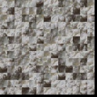
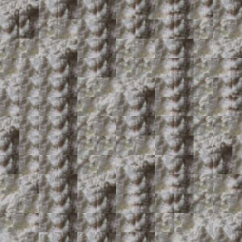
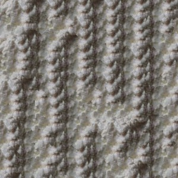
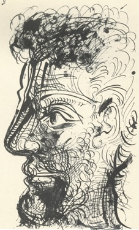
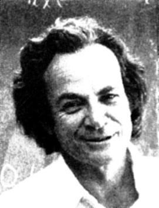
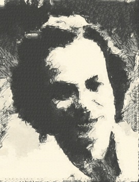

Overview
This project aims to implement the image quilting algorithm for texture synthesis and transfer based on the 2001 SIGGRAPH paper by Efros and Freeman. Texture synthesis is the creation of a larger texture from a small sample, and texture transfer is giving an object the appearance of a sample while preserving its shape. In texture synthesis you sample patches and lay them in overlapping patterns while computing a path along pixels with similar intensities in the overlapping region and select which region to draw from. Texture transfer on the other hand is done by encouraging sampled patches to have similar appearance to a target image and match the overlapping regions of already sampled patches.
Randomly Sampled Texture
The quilt_random function generates a new texture by filling
an output image of size out_size with randomly sampled square
patches of size patch_size taken from an input texture sample.
The function iterates over the output image grid, selecting random top-left coordinates
from the input texture to extract patches without exceeding its boundaries. These
patches are then placed sequentially into the corresponding grid locations in the
output image. The result is a randomized, quilted texture that mimics the input
texture's appearance but without blending or smoothing between patches. The result of this
process looks like the following:
Original Image

Random Sampled Texture
Overlapping Patches
The quilt_simple function creates a texture by sampling square patches
from an input texture and arranging them to fill an output image of size out_size.
Starting with a random patch in the upper-left corner, subsequent patches are sampled to
overlap with existing ones, ensuring alignment in horizontal, vertical, or both directions,
depending on their position in the grid. The overlap between patches is evaluated using a
helper function, ssd_patch, which computes the cost of sampling a patch based
on the sum of squared differences (SSD) between the overlapping regions of the sampled and
existing patches. This computation uses a masked template for efficiency, leveraging filtering
operations to calculate the SSD for all channels of the input texture. Another helper
function, choose_sample, selects a patch with a low cost from the cost image,
where the selection threshold is determined by a tolerance parameter tol. A
lower tol results in deterministic copying of the input texture, while a higher
tol introduces more randomness for diverse textures. Once a patch is selected,
its pixels are copied into the corresponding position in the output image. As the results below
show, this process produces slightly improved quilts.
Original Image
Simple Quilt
Seam Finding
As is evident in the previous examples, there are still very visible seams between the patches. The next step is to incorporate seam finding to remove these edge artifacts according to section 2.1 of the paper. This process works by finding the min-cost contiguous path from left to right in a patch according to the square difference of the output and new patch. This addition further improves the quilt with less defined edges.
Original Image
Quilt with Seam Finding
Seam Finding
The texture_transfer function generates an output texture guided
by a target image (guidance_im) by modifying the quilt_cut
approach to incorporate a target-driven cost term. It begins by placing a
random patch from the sample image in the upper-left corner of the output.
For each subsequent patch, it calculates two cost components: the overlap cost,
which ensures smooth transitions between adjacent patches using the sum of
squared differences (SSD) between overlapping regions, and the target cost,
which matches the sampled patch to the corresponding region in the target image.
These costs are combined with a weighting factor, alpha, to balance
texture similarity and adherence to the target image. A low-cost patch is then
selected and copied into the output image. Seams between patches are optimized
using seam-cutting techniques to ensure smooth boundaries. The function iterates
over the grid of patches, progressively filling the output while minimizing
discontinuities and aligning the texture with the target's structure. This process
results in a synthesized texture that blends the input sample's characteristics
with the appearance of the target image.
Source Texture
Target Image
Texture Transfer
